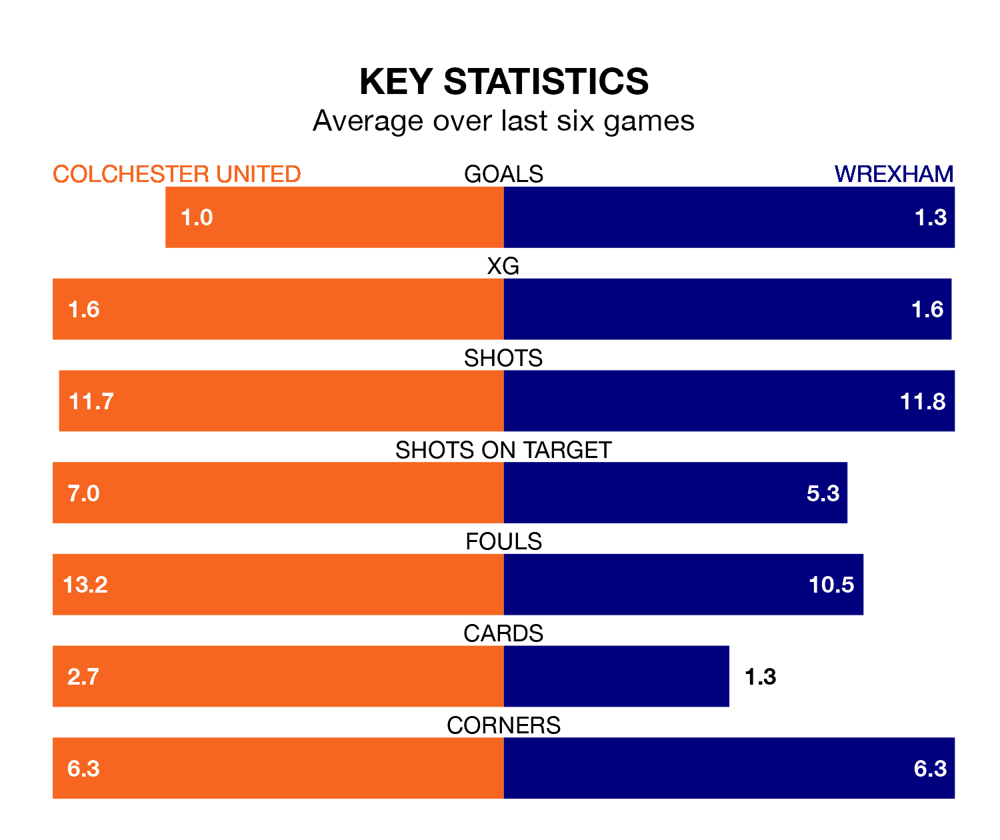

Struggling Colchester United face Wrexham at the JobServe Community Stadium on Saturday looking to build on a win in their last league outing.
After securing all three points with a 1-1 victory over Tranmere Rovers on Monday, the U's sit 23rd in EFL League Two.
They travel to play a Wrexham side third in the standings, who lost in their last match, 1-0 against Doncaster Rovers, on Tuesday.
With 72 goals in 41 games so far this season, Wrexham are scoring more than average in the league with 1.8 goals per game. And they are conceding fewer than average, letting in 49 goals at a rate of 1.2 per game.
Colchester, meanwhile, are below average scorers, with 1.3 goals per game, compared to a league average of 1.5. They have conceded 1.7 goals per game.
In Arthur Okonkwo, the Dragons can rely on one of the league's safest pair of hands. He has kept 12 clean sheets in his 31 appearances this season in EFL League Two.
In United's net, Owen Goodman has four clean sheets in 36 games. He has conceded a goal every 68 minutes, 60% more often than the 106 minutes between goals for Okonkwo.
The U's are in mixed form in EFL League Two, with one win and four draws from their last six games.
With three wins and a draw over that period, the away side's form is better – they have taken 10 points from 18, compared to the hosts' seven.
Saturday's match will be refereed by Tom Reeves, who has taken charge of 11 EFL League Two games so far this season, issuing one red card and booking 39 players. He has awarded four penalties.
The last Wrexham game Reeves refereed was the 1-0 win away at Swindon Town on December 26. He is yet to oversee a match featuring Colchester this season.
Updated: 16:41 (UTC), 04/04/24